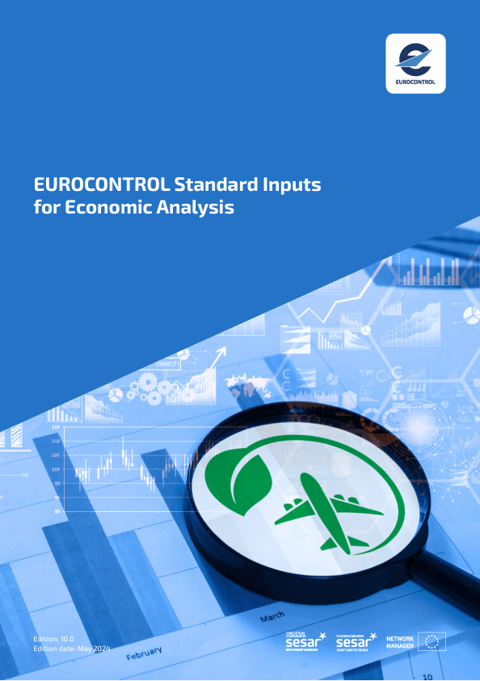

This document provides values for data items commonly used in economic analyses, especially cost-benefit analyses. Each standard input is presented together with details of the sources and a discussion of the applicability and use of the values. The values have been compiled from publicly available documents. They are often average values and may not be appropriate in all circumstances.
Author
EUROCONTROL Business Cases team
Published
April 18, 2023
Release
10.0.3

`r if(knitr:::is_html_output()) ’
Welcome
This is the website for “EUROCONTROL Standard Inputs for Economic Analyses”.
The EUROCONTROL Business Cases team regularly refreshes the content and the underlying data in order to provide up-to-date information for interested readers.
’`
About us
The EUROCONTROL Business Cases team is a dedicated team of experts that support stakeholders who need to choose between different solutions and alternatives, using the best available data. For 20 years, EUROCONTROL has been providing ATM decision makers with a wide range of regularly updated Standard Inputs to help them to take rational long-term investment decision.
Notice and Disclaimer
The EUROCONTROL Business Cases team has made every effort to ensure that the information and analysis contained in this document are as accurate as possible. Only information from quoted sources has been used and information relating to named parties has been checked with the parties concerned. Despite these precautions, should you find any errors or inconsistencies we would be grateful if you could please bring them to our attention. Our email address is aviation.intelligence@eurocontrol.int
This document is published by the EUROCONTROL Business Cases team in the interest of the exchange of information.
Information contained in this document may not be modified without prior written permission from the EUROCONTROL Business Cases team.
The views expressed herein do not necessarily respect the official views or policy of EUROCONTROL, which makes no warranty, either implied or express, for the information contained in this document, neither does it assume any legal liability or responsibility for the accuracy, completeness or usefulness of this information.
Publications
EUROCONTROL Headquarters
96 Rue de la Fusée
B-1130 BRUSSELS
Tel: +32 (0)2 729 1152
Fax: +32 (0)2 729 5149
E-mail: publications@eurocontrol.int
EUROCONTROL Standard Inputs for Economic AnalysesEUROCONTROL Standard Inputs for Economic AnalysesForewordWelcomeForewordIntroductionGeneral parametersGeographical areasTraffic and capacity1Air traffic statistics and forecasts2Medium-term capacity planning3Number of IFR flights4Air traffic delay5Transit timeEnvironment6Rate of fuel burn7Amount of emissions released by fuel burn8Cost of emissions9Cost of noise10Shadow cost of carbon11Proportion of sustainable aviation fuelAirspace Users12Aircraft operating costs13Average number of passengers14Cancellation cost15Operational cancellation rate16Cost of delay17Cost of diversion18Turnaround time19IFR average flight distance and flight duration20IFR flight information per market segment21Distance flown by charging zone22Load factor – cargo23Load factor – passengers24Cost of aviation fuel25Value of an average passenger flight26Fleet age27Fleet size28Fleet CNS capabilityATM29En-route ANS costs30Route charge share per market segment31ANSP employment costs32Asset life33ATM cost-effectiveness indicators34ATM operational units35CNS infrastructure36PBN and precision approach proceduresAirports37Airport classification38Taxiing timeDrones39Investment in U-space40Drone fleetPassengers41Purpose of passenger travel42Passenger value of timeSafety43Accident/incident statistics44Value of a statistical life45Value of a statistical injuryFinancial values46Discount rate47Exchange rateAIU HomeHomehttps://ansperformance.euTraffichttps://ansperformance.eu/traffic/ Daily Traffic Dashboardhttps://www.eurocontrol.int/Economics/DailyTrafficVariation-States.htmlTraffic Forecasthttps://ansperformance.eu/traffic/statfor/Efficiency & Environmenthttps://ansperformance.eu/efficiency/CO2 emissionshttps://ansperformance.eu/efficiency/emissions/Horizontal Flight Efficiencyhttps://ansperformance.eu/efficiency/hfe/Vertical Flight Efficiencyhttps://ansperformance.eu/efficiency/vfe/Terminal Holdingshttps://ansperformance.eu/efficiency/asma/Taxi-outhttps://ansperformance.eu/efficiency/taxiout/Economicshttps://ansperformance.eu/economics/Service Unitshttps://www.eurocontrol.int/ServiceUnits/Dashboard/EnRouteMainDashboard.htmlUnit Rates and Costshttps://www.eurocontrol.int/ServiceUnits/Dashboard/EnRouteUnitRates.htmlATM Cost Effectivenesshttps://ansperformance.eu/ACE/ANSPs Financial Situationhttps://ansperformance.eu/economics/finance/CBAhttps://ansperformance.eu/economics/cba/Stakeholder viewshttps://ansperformance.eu/dashboard/stakeholder/Airport Viewhttps://ansperformance.eu/airport/ANSP Viewhttps://ansperformance.eu/ansp/FAB Viewhttps://ansperformance.eu/dashboard/stakeholder/fab/State Viewhttps://ansperformance.eu/dashboard/stakeholder/state/Publicationshttps://ansperformance.eu/publications/Datahttps://ansperformance.eu/data/Referencehttps://ansperformance.eu/reference/ExternalSingle European Sky Portalhttps://www.eurocontrol.int/prudata/dashboard/ICAO GANPhttps://www4.icao.int/ganpportal/AboutAbout the PRChttps://ansperformance.eu/about/prc/About the PRUhttps://ansperformance.eu/about/us/Release noteshttps://ansperformance.eu/post/Disclaimerhttps://ansperformance.eu/about/disclaimer/AreasTrafficCapacity & delayshttps://ansperformance.eu/capacity/Efficiency & environmentEconomicsViewsAirportshttps://ansperformance.eu/dashboard/stakeholder/airport/Air Navigation Service ProviderFunctional Airspace Blockhttps://ansperformance.eu/fab/StatePublicationsReferenceData downloadsDefinitionshttps://ansperformance.eu/definition/Methodologyhttps://ansperformance.eu/methodology/Acronymshttps://ansperformance.eu/acronym/Bibliographyhttps://ansperformance.eu/bibliography/— ICAO GANPSES Single European Sky (SES) PortalPrevious Versions Version v9.0.3 (April 2023)/#VERSION:v9.0.3 Version v10.0.0 (June 2024)/#VERSION:v10.0.0 Latest Version/#VERSION:latesthttps://github.com/euctrl-pru/standard_inputs/standard_inputs.pdfhttps://twitter.com/intent/tweet?url=|url|Welcome
EUROCONTROL Standard Inputs for Economic AnalysesEUROCONTROL Standard Inputs for Economic AnalysesEUROCONTROL Standard Inputs for Economic AnalysesEUROCONTROL Standard Inputs for Economic AnalysesThis document provides values for data items commonly used in economic analyses, especially cost-benefit analyses. Each standard input is presented together with details of the sources and a discussion of the applicability and use of the values. The values have been compiled from publicly available documents. They are often average values and may not be appropriate in all circumstances.This document provides values for data items commonly used in economic analyses, especially cost-benefit analyses. Each standard input is presented together with details of the sources and a discussion of the applicability and use of the values. The values have been compiled from publicly available documents. They are often average values and may not be appropriate in all circumstances.